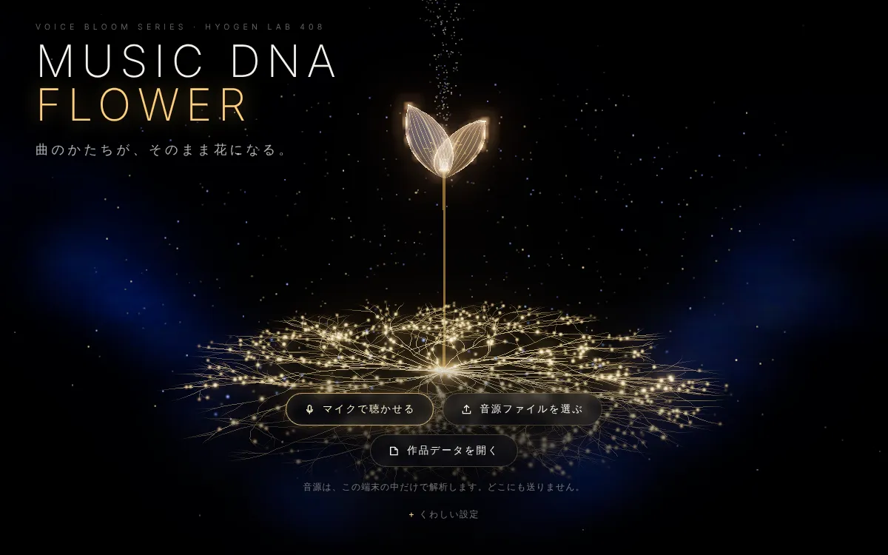

Collection작품으로 둘러보기
모든 작품과 기록 31건
음악
MUSIC곡을 만들고 전한다. 악곡, 테마송, 배포.
-
체험 가능

Archive활동 기록
목소리・방송・연기
VOICE / BROADCAST / ACTING목소리로 연기하고, 말하고, 방송한다. 음성 작품, 프로그램, 출연.
-
체험 가능

Archive활동 기록
-
2020년
실시 완료학습 앱 음성
리쓰메이칸 아시아태평양대학(APU) 'TOBIRA'
담당음성 프로듀스・주연
APU 최초의 공식 앱. 입학 전 국제 학생을 위한 일본어 학습 앱으로, 음성을 프로듀스하고 주연했습니다.
-
 2019년
실시 완료오디오 드라마
2019년
실시 완료오디오 드라마Sweettimes & BerryBoy
담당총괄 프로듀스
매칭 앱을 소재로 한 연애 오디오 드라마. 고스펙 미혼 남성 한 명을 네 명의 악녀가 노린다. iTunes Spoken Word 부문 일본 3위.
-

영상・시각・공간
IMAGE / VISION / SPACE영상과 눈에 보이는 것을 만든다. 영상, 연출, 공간.
-
체험 가능

Archive활동 기록
- 2024년
이야기・출판・게임
STORY / PUBLISHING / GAMES이야기를 쓰고, 책으로 만들고, 놀 수 있는 형태로. 서적, 사전, 게임.
-
체험 가능

-
체험 가능

Archive활동 기록
-
2025년
실시 완료서적
저서 『【초역】 풍자화전』 외
담당저자
700년 전의 제아미가 가르치는, 말하지 않는 목소리 사용법. 그 밖에 『엔터테인먼트와 과학』 『센스의 과학』 등 (제목은 번역, 책은 일본어).
교육・대화
EDUCATION / DIALOGUE가르치고, 사람과 마주한다. 레슨, 수업, 강좌, 대화의 도구.
-
체험 가능

-
체험 가능
 No.10교육・대화완성
No.10교육・대화완성이름 없는 집안일 진단 둘이서판
웹 진단
두 사람이 같은 60개 질문에 따로 답하고, 집안일 분담이 엇갈린 곳만 늘어놓는 진단. 부제는 '하고 있어? 보여?'
Archive활동 기록
- 2022년
-
 2021년
실시 완료수업
2021년
실시 완료수업공립학교 성우 수업 (NHK 소개)
공립 초등학교에서 한, 목소리를 쓰는 표현 수업(성우 체험). NHK 뉴스에서 '아이들에게 인기 있는 직업 체험'으로 소개되었다.
- 2020년
- 2006년〜
연구・실험
RESEARCH / EXPERIMENTS측정하고, 확인하고, 논문으로. 연구, 실험, AI 평가.
-
체험 가능

-
체험 가능

-
체험 가능
 No.11연구・실험완성
No.11연구・실험완성SHUKUYO ENGINE
웹 도구 · 3개 언어
태어난 날 달이 있던 수(본명수)를 숙요경의 27수에서 찾아내는 도구. 사신, 궁합, 원전과 출전 비교까지. 일본어・영어・중국어.
Archive활동 기록
-
2026년 10월 1일
진행 중경영 실험 · 다큐멘터리
AI는 사장이 될 수 있을까? ― 인간과 AI의 판단의 경계를 탐구하는 실험
자사 경영 판단의 일부를 AI에 맡기고, AI의 제안・인간의 판단・실제 결과를 나누어 기록하는 연구 실험.
- 2026년 10월 1일
-
2026년 9월
실시 완료논문
표현자에 의한 표현 조작과 수용자의 반응을 연결하는 통합적 연구 프레임워크
표현하는 사람이 무엇을 했는지와 수용자가 어떻게 반응했는지를 하나의 틀로 잇기 위한 논문(동료 심사 전).
- 2026년
사업과 사회에서의 실천
PRACTICE IN BUSINESS AND SOCIETY표현을 사업과 사회의 현장에서 움직인다. 행사, 상품, 회사, 세미나.
-
체험 가능
 No.08사업과 사회에서의 실천데모 영상
No.08사업과 사회에서의 실천데모 영상HYOGEN BUSINESS LEARNING 60초 광고
영상
업무 매뉴얼과 연수 교재를 만드는 활동을 가상의 제조 회사 예로 소개하는 60초 영상.
Archive활동 기록
-
 2024년 1월 8일
실시 완료이벤트
2024년 1월 8일
실시 완료이벤트표현자의 제전 THE FES 2024
담당기획, 출연 교섭, 구성, 당일 운영
2024년 1월 8일(성인의 날), J:COM 기타큐슈 예술극장 소극장에서 연 표현자의 제전. 기타큐슈시 시제 60주년 사업으로 인정. 출연 20팀 이상.
-
 2016〜2019년
2016〜2019년
이 조건에 맞는 작품이 없습니다. 조건을 해제하거나 다른 단어로 찾아 주세요.